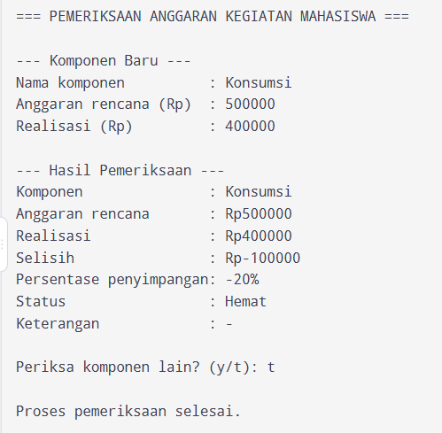
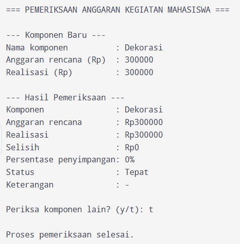
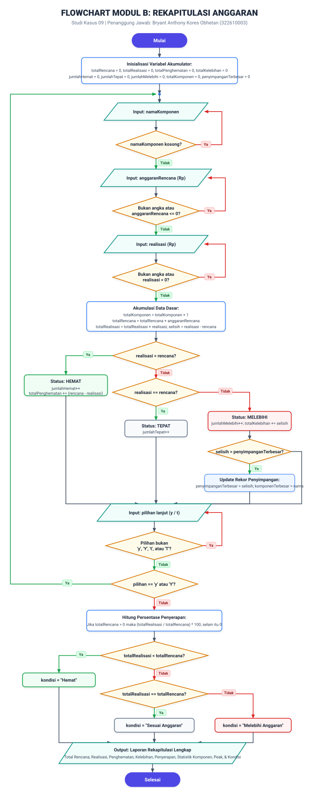
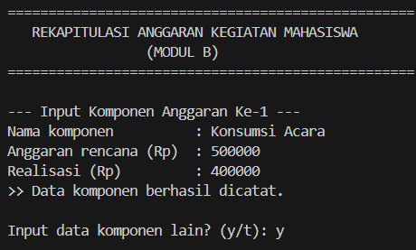
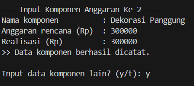
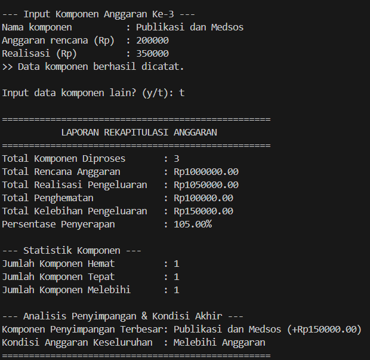

Aplikasi konsol C++ prosedural untuk mengevaluasi efisiensi anggaran per pos pengeluaran, mendeteksi toleransi kelebihan belanja (batas 10%), serta menyajikan rekapitulasi agregat dan kesimpulan kondisi kegiatan.
Identifikasi latar belakang, aturan perhitungan, batasan proyek, tabel IPO, serta spesifikasi variabel & tipe data.
Pengelolaan anggaran organisasi mahasiswa sering menghadapi deviasi pengeluaran riil dibandingkan rencana anggaran biaya (RAB). Tanpa sistem otomatis, bendahara sulit melacak pos mana yang hemat atau mengalami kebocoran biaya.
| Masukan (Input) | Proses (Process) | Keluaran (Output) |
|---|---|---|
namaKomponen (teks)anggaranRencana (> 0)realisasi (≥ 0)pilihan (y / t)
|
1. Validasi masukan (cek kosong, non-angka, negatif). 2. Hitung selisih = realisasi - anggaranRencana.3. Hitung persen = (selisih / anggaranRencana) * 100.4. Tentukan status (Hemat / Tepat / Melebihi) & toleransi 10%. 5. Akumulasi total rencana, realisasi, hemat, kelebihan. 6. Pelacakan nilai maksimum pembengkakan. 7. Hitung penyerapan dan status agregat kegiatan. |
Rincian Komponen: Selisih, persen, status, keterangan. Laporan Akhir: Total rencana, realisasi, hemat, lebih, penyerapan, statistik, pos penyimpangan terbesar, kondisi keseluruhan. |
| Nama Variabel | Tipe Data | Nilai Awal | Modul | Kegunaan |
|---|---|---|---|---|
namaKomponen | string | "" | A | Menyimpan nama pos anggaran. |
anggaranRencana | double | 0.0 | A | Pagu anggaran yang direncanakan (> 0). |
realisasi | double | 0.0 | A | Realisasi pengeluaran aktual (≥ 0). |
selisih | double | 0.0 | A & B | Hasil pengurangan realisasi - anggaranRencana. |
persenPenyimpangan | double | 0.0 | A | Persentase deviasi pengeluaran per pos. |
status | string | "" | A | Kategori status ("Hemat", "Tepat", "Melebihi Anggaran"). |
keterangan | string | "-" | A | Catatan toleransi ("-", "Perlu Evaluasi", "Peringatan"). |
totalRencana | double | 0.0 | B | Akumulator penjumlahan anggaran rencana seluruh pos. |
totalRealisasi | double | 0.0 | B | Akumulator penjumlahan realisasi belanja seluruh pos. |
totalPenghematan | double | 0.0 | B | Akumulator jumlah dana yang dihemat pada pos hemat. |
totalKelebihan | double | 0.0 | B | Akumulator jumlah pembengkakan pada pos melebihi. |
penyimpanganTerbesar | double | 0.0 | B | Nilai pembengkakan nominal terbesar yang ditemukan. |
komponenTerbesar | string | "-" | B | Nama pos dengan pembengkakan nominal terbesar. |
kondisiKegiatan | string | "-" | B | Status agregat akhir kegiatan. |
Evaluasi individual status per komponen dan deteksi ambang batas toleransi kelebihan 10%.
namaKomponen. Jika kosong, minta input ulang.anggaranRencana. Jika bukan angka atau ≤ 0, minta input ulang.realisasi. Jika bukan angka atau negatif (< 0), minta input ulang.selisih = realisasi - anggaranRencana.persenPenyimpangan = (selisih / anggaranRencana) * 100.realisasi < anggaranRencana, status = "Hemat".realisasi == anggaranRencana, status = "Tepat".realisasi > anggaranRencana, status = "Melebihi Anggaran":
keterangan = "Perlu Evaluasi".keterangan = "Peringatan".ALGORITMA PemeriksaanAnggaranModulA
DEKLARASI
namaKomponen, status, keterangan, pilihan : string
anggaranRencana, realisasi, selisih, persenPenyimpangan : real
MULAI
TAMPILKAN "PEMERIKSAAN ANGGARAN KEGIATAN MAHASISWA"
ULANGI
BACA namaKomponen
SELAMA namaKomponen kosong LAKUKAN
BACA namaKomponen
AKHIR SELAMA
BACA anggaranRencana
SELAMA anggaranRencana bukan angka ATAU anggaranRencana <= 0 LAKUKAN
BACA anggaranRencana
AKHIR SELAMA
BACA realisasi
SELAMA realisasi bukan angka ATAU realisasi < 0 LAKUKAN
BACA realisasi
AKHIR SELAMA
selisih <- realisasi - anggaranRencana
persenPenyimpangan <- selisih / anggaranRencana * 100
keterangan <- "-"
JIKA realisasi < anggaranRencana MAKA
status <- "Hemat"
LAINNYA JIKA realisasi = anggaranRencana MAKA
status <- "Tepat"
LAINNYA
status <- "Melebihi Anggaran"
JIKA selisih * 100 <= anggaranRencana * 10 MAKA
keterangan <- "Perlu Evaluasi"
LAINNYA
keterangan <- "Peringatan"
AKHIR JIKA
AKHIR JIKA
TAMPILKAN namaKomponen, anggaranRencana, realisasi, selisih,
persenPenyimpangan, status, keterangan
BACA pilihan
SAMPAI pilihan = "t" ATAU pilihan = "T"
SELESAI#include <iostream>
#include <string>
using namespace std;
int main() {
string namaKomponen, status, keterangan, pilihan;
double anggaranRencana, realisasi, selisih, persenPenyimpangan;
cout << "=== PEMERIKSAAN ANGGARAN KEGIATAN MAHASISWA ===" << endl;
do {
cout << endl << "--- Komponen Baru ---" << endl;
// Input nama komponen (boleh berspasi, tidak boleh kosong)
cout << "Nama komponen : ";
getline(cin, namaKomponen);
while (namaKomponen.empty()) {
cout << "Nama komponen tidak boleh kosong." << endl;
cout << "Nama komponen : ";
getline(cin, namaKomponen);
}
// Input anggaran rencana (harus angka dan lebih dari 0)
cout << "Anggaran rencana (Rp) : ";
cin >> anggaranRencana;
while (cin.fail() || anggaranRencana <= 0) {
cout << "Input tidak valid. Anggaran harus berupa angka lebih dari 0." << endl;
cin.clear();
cin.ignore(1000, '\n');
cout << "Anggaran rencana (Rp) : ";
cin >> anggaranRencana;
}
// Input realisasi (harus angka dan tidak boleh negatif)
cout << "Realisasi (Rp) : ";
cin >> realisasi;
while (cin.fail() || realisasi < 0) {
cout << "Input tidak valid. Realisasi harus berupa angka tidak negatif." << endl;
cin.clear();
cin.ignore(1000, '\n');
cout << "Realisasi (Rp) : ";
cin >> realisasi;
}
// Hitung selisih dan persentase penyimpangan
selisih = realisasi - anggaranRencana;
persenPenyimpangan = (selisih / anggaranRencana) * 100;
keterangan = "-";
if (realisasi < anggaranRencana) {
status = "Hemat";
} else if (realisasi == anggaranRencana) {
status = "Tepat";
} else {
status = "Melebihi Anggaran";
if (selisih * 100 <= anggaranRencana * 10) {
keterangan = "Perlu Evaluasi";
} else {
keterangan = "Peringatan";
}
}
// Tampilkan rincian
cout << endl << "--- Hasil Pemeriksaan ---" << endl;
cout << "Komponen : " << namaKomponen << endl;
cout << "Anggaran rencana : Rp" << anggaranRencana << endl;
cout << "Realisasi : Rp" << realisasi << endl;
cout << "Selisih : Rp" << selisih << endl;
cout << "Persentase penyimpangan: " << persenPenyimpangan << "%" << endl;
cout << "Status : " << status << endl;
cout << "Keterangan : " << keterangan << endl;
cout << endl << "Periksa komponen lain? (y/t): ";
cin >> pilihan;
while (pilihan != "y" && pilihan != "Y" && pilihan != "t" && pilihan != "T") {
cout << "Pilihan tidak valid. Ketik y atau t: ";
cin >> pilihan;
}
cin.ignore(1000, '\n');
} while (pilihan == "y" || pilihan == "Y");
cout << endl << "Proses pemeriksaan selesai." << endl;
return 0;
}| No | Skenario | Data Masukan | Hasil Diharapkan | Hasil Aktual | Status |
|---|---|---|---|---|---|
| 1 | Hemat | Konsumsi, 500000, 400000 | Hemat, -100rb, -20%, `-` | Sesuai | Berhasil |
| 2 | Tepat | Dekorasi, 300000, 300000 | Tepat, 0, 0%, `-` | Sesuai | Berhasil |
| 3 | Lebih 5% | Sound, 400000, 420000 | Melebihi, Perlu Evaluasi | Sesuai | Berhasil |
| 4 | Batas 10% | Transport, 500000, 550000 | Melebihi, Perlu Evaluasi | Sesuai | Berhasil |
| 5 | Lebih 50% | Publikasi, 400000, 600000 | Melebihi, Peringatan | Sesuai | Berhasil |
| 6 | Realisasi 0 | Cadangan, 600000, 0 | Hemat, -600rb, -100% | Sesuai | Berhasil |
| 7 | Input Salah | Enter, 0, -5, abc, -100 | Ditolak dan diminta ulang | Sesuai | Berhasil |
| 8 | Multi Komponen | Konsumsi, Sound, x, T | Looping berjalan rapi | Sesuai | Berhasil |


Akumulasi total keuangan, pelacakan pos pembengkakan nominal terbesar, dan penentuan kondisi akhir kegiatan.
totalRencana = 0, totalRealisasi = 0, totalPenghematan = 0, totalKelebihan = 0, pencacah kategori = 0, penyimpanganTerbesar = 0, komponenTerbesar = "-".do...while:
namaKomponen, anggaranRencana, realisasi.jumlahHemat & penghematan; jika tepat tambah jumlahTepat; jika melebihi tambah jumlahMelebihi & kelebihan.selisih > penyimpanganTerbesar, update rekor terbesar dan nama pos.(totalRealisasi / totalRencana) * 100 (jika totalRencana > 0).ALGORITMA RekapitulasiAnggaranModulB
DEKLARASI
namaKomponen, pilihan, komponenTerbesar, kondisiKegiatan : string
anggaranRencana, realisasi, selisih : real
totalRencana, totalRealisasi, totalPenghematan, totalKelebihan : real
persentasePenyerapan, penyimpanganTerbesar : real
jumlahHemat, jumlahTepat, jumlahMelebihi, totalKomponen : integer
MULAI
totalRencana <- 0; totalRealisasi <- 0; totalPenghematan <- 0; totalKelebihan <- 0
jumlahHemat <- 0; jumlahTepat <- 0; jumlahMelebihi <- 0; totalKomponen <- 0
penyimpanganTerbesar <- 0; komponenTerbesar <- "-"
ULANGI
totalKomponen <- totalKomponen + 1
BACA namaKomponen, anggaranRencana, realisasi
totalRencana <- totalRencana + anggaranRencana
totalRealisasi <- totalRealisasi + realisasi
selisih <- realisasi - anggaranRencana
JIKA realisasi < anggaranRencana MAKA
jumlahHemat <- jumlahHemat + 1
totalPenghematan <- totalPenghematan + (anggaranRencana - realisasi)
LAINNYA JIKA realisasi = anggaranRencana MAKA
jumlahTepat <- jumlahTepat + 1
LAINNYA
jumlahMelebihi <- jumlahMelebihi + 1
totalKelebihan <- totalKelebihan + selisih
JIKA selisih > penyimpanganTerbesar MAKA
penyimpanganTerbesar <- selisih
komponenTerbesar <- namaKomponen
AKHIR JIKA
AKHIR JIKA
BACA pilihan
SAMPAI pilihan = "t" ATAU pilihan = "T"
JIKA totalRencana > 0 MAKA
persentasePenyerapan <- (totalRealisasi / totalRencana) * 100
LAINNYA
persentasePenyerapan <- 0
AKHIR JIKA
JIKA totalRealisasi < totalRencana MAKA
kondisiKegiatan <- "Hemat"
LAINNYA JIKA totalRealisasi = totalRencana MAKA
kondisiKegiatan <- "Sesuai Anggaran"
LAINNYA
kondisiKegiatan <- "Melebihi Anggaran"
AKHIR JIKA
TAMPILKAN Laporan Rekapitulasi, Statistik, dan Hasil Akhir
SELESAI
#include <iostream>
#include <string>
#include <iomanip>
using namespace std;
int main() {
string namaKomponen, pilihan;
double anggaranRencana = 0.0, realisasi = 0.0, selisih = 0.0;
double totalRencana = 0.0, totalRealisasi = 0.0;
double totalPenghematan = 0.0, totalKelebihan = 0.0, persentasePenyerapan = 0.0;
int jumlahHemat = 0, jumlahTepat = 0, jumlahMelebihi = 0, totalKomponen = 0;
double penyimpanganTerbesar = 0.0;
string komponenTerbesar = "-", kondisiKegiatan = "-";
cout << "=== REKAPITULASI ANGGARAN KEGIATAN MAHASISWA (MODUL B) ===" << endl;
do {
cout << endl << "--- Input Komponen Anggaran Ke-" << (totalKomponen + 1) << " ---" << endl;
cout << "Nama komponen : ";
getline(cin, namaKomponen);
while (namaKomponen.empty()) {
cout << "Input tidak valid. Nama komponen tidak boleh kosong." << endl;
cout << "Nama komponen : ";
getline(cin, namaKomponen);
}
cout << "Anggaran rencana (Rp) : ";
cin >> anggaranRencana;
while (cin.fail() || anggaranRencana <= 0) {
cout << "Input tidak valid. Anggaran harus berupa angka lebih dari 0." << endl;
cin.clear();
cin.ignore(1000, '\n');
cout << "Anggaran rencana (Rp) : ";
cin >> anggaranRencana;
}
cout << "Realisasi (Rp) : ";
cin >> realisasi;
while (cin.fail() || realisasi < 0) {
cout << "Input tidak valid. Realisasi harus berupa angka tidak negatif." << endl;
cin.clear();
cin.ignore(1000, '\n');
cout << "Realisasi (Rp) : ";
cin >> realisasi;
}
totalKomponen++;
totalRencana += anggaranRencana;
totalRealisasi += realisasi;
selisih = realisasi - anggaranRencana;
if (realisasi < anggaranRencana) {
jumlahHemat++;
totalPenghematan += (anggaranRencana - realisasi);
} else if (realisasi == anggaranRencana) {
jumlahTepat++;
} else {
jumlahMelebihi++;
totalKelebihan += selisih;
if (selisih > penyimpanganTerbesar) {
penyimpanganTerbesar = selisih;
komponenTerbesar = namaKomponen;
}
}
cout << ">> Data komponen berhasil dicatat." << endl;
cout << endl << "Input data komponen lain? (y/t): ";
cin >> pilihan;
while (pilihan != "y" && pilihan != "Y" && pilihan != "t" && pilihan != "T") {
cout << "Pilihan tidak valid. Silakan ketik y atau t: ";
cin >> pilihan;
}
cin.ignore(1000, '\n');
} while (pilihan == "y" || pilihan == "Y");
if (totalRencana > 0) {
persentasePenyerapan = (totalRealisasi / totalRencana) * 100.0;
} else {
persentasePenyerapan = 0.0;
}
if (totalRealisasi < totalRencana) {
kondisiKegiatan = "Hemat";
} else if (totalRealisasi == totalRencana) {
kondisiKegiatan = "Sesuai Anggaran";
} else {
kondisiKegiatan = "Melebihi Anggaran";
}
cout << endl << "=== LAPORAN REKAPITULASI ANGGARAN ===" << endl;
cout << fixed << setprecision(2);
cout << "Total Komponen Diproses : " << totalKomponen << endl;
cout << "Total Rencana Anggaran : Rp" << totalRencana << endl;
cout << "Total Realisasi Pengeluaran : Rp" << totalRealisasi << endl;
cout << "Total Penghematan : Rp" << totalPenghematan << endl;
cout << "Total Kelebihan Pengeluaran : Rp" << totalKelebihan << endl;
cout << "Persentase Penyerapan : " << persentasePenyerapan << "%" << endl;
cout << "Komponen Penyimpangan Terbesar: " << komponenTerbesar << endl;
cout << "Kondisi Anggaran Keseluruhan : " << kondisiKegiatan << endl;
return 0;
}| No | Skenario | Data Masukan | Hasil Rekapitulasi | Kondisi Akhir | Status |
|---|---|---|---|---|---|
| 1 | Campuran | Konsumsi (500k/400k), Dekor (300k/300k), Pub (200k/350k) | Rencana: 1jt, Real: 1.05jt, Penyerapan: 105% | Melebihi | Berhasil |
| 2 | Semua Hemat | Transport (800k/600k), Alat (1.2jt/1jt) | Rencana: 2jt, Real: 1.6jt, Hemat: 400k | Hemat | Berhasil |
| 3 | Semua Tepat | Honor (1.5jt/1.5jt), Zoom (250k/250k) | Rencana: 1.75jt, Real: 1.75jt, Penyerapan: 100% | Sesuai Anggaran | Berhasil |
| 4 | Kompetisi Peak | Konsumsi (+100k), Hadiah (+400k), Dok (+200k) | Penyimpangan Terbesar: Hadiah (+400k) | Melebihi | Berhasil |
| 5 | Realisasi Nol | Cadangan (1jt/0) | Penghematan: 1jt, Penyerapan: 0% | Hemat | Berhasil |
| 6 | Batas 1 Data | Banner (150k/160k) | Total Komponen: 1, Lebih: 10k | Melebihi | Berhasil |
| 7 | Input Tidak Valid | Empty, huruf, negatif, pilihan 'x' | Ditolak ramah, dipulihkan dengan cin.clear() | Normal | Berhasil |
| 8 | Impas Agregat | Panggung (600k/500k), Sound (400k/500k) | Rencana: 1jt, Realisasi: 1jt (Impas) | Sesuai Anggaran | Berhasil |
| Iterasi | Komponen | Rencana | Realisasi | Total Rencana | Total Realisasi | Total Hemat | Total Lebih | Pilihan |
|---|---|---|---|---|---|---|---|---|
| 1 | Konsumsi | 500.000 | 400.000 | 500.000 | 400.000 | 100.000 | 0 | 'y' (Lanjut) |
| 2 | Dekorasi | 300.000 | 300.000 | 800.000 | 700.000 | 100.000 | 0 | 'y' (Lanjut) |
| 3 | Publikasi | 200.000 | 350.000 | 1.000.000 | 1.050.000 | 100.000 | 150.000 | 't' (Berhenti) |



Penggabungan utuh logika Modul A dan Modul B ke dalam satu program eksekusi mandiri tanpa array.
Kedua modul digabungkan secara harmonis: pada setiap iterasi do...while, sistem menerima data komponen, Modul A memproses dan mencetak evaluasi instan pos tersebut, lalu Modul B langsung menyerap datanya ke variabel akumulator. Ketika pengguna selesai ('t'), Modul B mencetak laporan rekapitulasi agregat dan menetapkan status akhir kegiatan.
#include <iostream>
#include <string>
#include <iomanip>
using namespace std;
int main() {
string namaKomponen, status, keterangan, pilihan;
double anggaranRencana = 0.0, realisasi = 0.0, selisih = 0.0, persenPenyimpangan = 0.0;
int totalKomponen = 0, jumlahHemat = 0, jumlahTepat = 0, jumlahMelebihi = 0;
double totalRencana = 0.0, totalRealisasi = 0.0, totalPenghematan = 0.0, totalKelebihan = 0.0;
double persentasePenyerapan = 0.0, penyimpanganTerbesar = 0.0;
string komponenTerbesar = "-", kondisiKegiatan = "-";
cout << "======================================================================" << endl;
cout << " SISTEM EVALUASI & REKAPITULASI ANGGARAN KEGIATAN MAHASISWA " << endl;
cout << " (PROGRAM TERINTEGRASI) " << endl;
cout << "======================================================================" << endl;
do {
totalKomponen++;
cout << endl << "--------------------------------------------------" << endl;
cout << " INPUT KOMPONEN ANGGARAN KE-" << totalKomponen << endl;
cout << "--------------------------------------------------" << endl;
// Validasi Nama Komponen
cout << "Nama komponen : ";
getline(cin, namaKomponen);
while (namaKomponen.empty()) {
cout << "[PERINGATAN] Nama komponen tidak boleh kosong." << endl;
cout << "Nama komponen : ";
getline(cin, namaKomponen);
}
// Validasi Anggaran Rencana (> 0)
cout << "Anggaran rencana (Rp) : ";
cin >> anggaranRencana;
while (cin.fail() || anggaranRencana <= 0) {
cout << "[PERINGATAN] Input tidak valid. Anggaran harus berupa angka lebih dari 0." << endl;
cin.clear();
cin.ignore(1000, '\n');
cout << "Anggaran rencana (Rp) : ";
cin >> anggaranRencana;
}
// Validasi Realisasi (>= 0)
cout << "Realisasi pengeluaran (Rp) : ";
cin >> realisasi;
while (cin.fail() || realisasi < 0) {
cout << "[PERINGATAN] Input tidak valid. Realisasi harus angka dan tidak boleh negatif." << endl;
cin.clear();
cin.ignore(1000, '\n');
cout << "Realisasi pengeluaran (Rp) : ";
cin >> realisasi;
}
// LOGIKA MODUL A: EVALUASI STATUS KOMPONEN
selisih = realisasi - anggaranRencana;
persenPenyimpangan = (selisih / anggaranRencana) * 100.0;
keterangan = "-";
if (realisasi < anggaranRencana) {
status = "Hemat";
} else if (realisasi == anggaranRencana) {
status = "Tepat";
} else {
status = "Melebihi Anggaran";
if (selisih * 100.0 <= anggaranRencana * 10.0) {
keterangan = "Perlu Evaluasi";
} else {
keterangan = "Peringatan";
}
}
// Tampilkan Output Rincian Modul A
cout << endl << ">>> HASIL PEMERIKSAAN KOMPONEN (MODUL A) <<<" << endl;
cout << fixed << setprecision(2);
cout << "Komponen : " << namaKomponen << endl;
cout << "Anggaran Rencana : Rp" << anggaranRencana << endl;
cout << "Realisasi : Rp" << realisasi << endl;
cout << "Selisih : Rp" << selisih << endl;
cout << "Persentase Penyimpangan : " << persenPenyimpangan << "%" << endl;
cout << "Status : " << status << endl;
cout << "Keterangan : " << keterangan << endl;
// LOGIKA MODUL B: AKUMULASI REKAPITULASI
totalRencana += anggaranRencana;
totalRealisasi += realisasi;
if (realisasi < anggaranRencana) {
jumlahHemat++;
totalPenghematan += (anggaranRencana - realisasi);
} else if (realisasi == anggaranRencana) {
jumlahTepat++;
} else {
jumlahMelebihi++;
totalKelebihan += selisih;
if (selisih > penyimpanganTerbesar) {
penyimpanganTerbesar = selisih;
komponenTerbesar = namaKomponen;
}
}
cout << endl << "Periksa/tambah komponen lain? (y/t): ";
cin >> pilihan;
while (pilihan != "y" && pilihan != "Y" && pilihan != "t" && pilihan != "T") {
cout << "[PERINGATAN] Pilihan tidak valid. Silakan ketik y atau t: ";
cin >> pilihan;
}
cin.ignore(1000, '\n');
} while (pilihan == "y" || pilihan == "Y");
// EVALUASI AKHIR MODUL B
if (totalRencana > 0) {
persentasePenyerapan = (totalRealisasi / totalRencana) * 100.0;
} else {
persentasePenyerapan = 0.0;
}
if (totalRealisasi < totalRencana) {
kondisiKegiatan = "Hemat";
} else if (totalRealisasi == totalRencana) {
kondisiKegiatan = "Sesuai Anggaran";
} else {
kondisiKegiatan = "Melebihi Anggaran";
}
// TAMPILAN LAPORAN REKAPITULASI AKHIR (OUTPUT MODUL B)
cout << endl;
cout << "======================================================================" << endl;
cout << " LAPORAN REKAPITULASI AKHIR KEGIATAN MAHASISWA " << endl;
cout << "======================================================================" << endl;
cout << "Total Komponen Terperiksa : " << totalKomponen << endl;
cout << "Total Rencana Anggaran : Rp" << totalRencana << endl;
cout << "Total Realisasi Pengeluaran : Rp" << totalRealisasi << endl;
cout << "Total Penghematan : Rp" << totalPenghematan << endl;
cout << "Total Kelebihan Pengeluaran : Rp" << totalKelebihan << endl;
cout << "Persentase Penyerapan : " << persentasePenyerapan << "%" << endl;
cout << "--- Statistik Jumlah Komponen ---" << endl;
cout << "Komponen Hemat : " << jumlahHemat << endl;
cout << "Komponen Tepat Sasaran : " << jumlahTepat << endl;
cout << "Komponen Melebihi Anggaran : " << jumlahMelebihi << endl;
cout << "--- Analisis Penyimpangan & Hasil Akhir ---" << endl;
cout << "Komponen Penyimpangan Terbesar : " << komponenTerbesar << endl;
cout << "KONDISI KEGIATAN KESELURUHAN : " << kondisiKegiatan << endl;
cout << "======================================================================" << endl;
return 0;
}\n tersisa dari cin >> pilihan.cin.ignore(1000, '\n') setelah membaca pilihan perulangan.
cin.fail() aktif dan karakter salah tidak terbuang.cin.clear() untuk reset flag error dan cin.ignore(1000, '\n') untuk membersihkan buffer.
selisih * 100.0 <= anggaranRencana * 10.0.
Uji coba langsung logika algoritma C++ secara interaktif di peramban web ini.
| Total Pos Terproses | 0 |
| Total Rencana Anggaran | Rp0.00 |
| Total Realisasi Belanja | Rp0.00 |
| Total Dana Penghematan | Rp0.00 |
| Total Kelebihan Pengeluaran | Rp0.00 |
| Rasio Penyerapan Anggaran | 0.00% |
| Statistik Komponen | Hemat: 0 | Tepat: 0 | Lebih: 0 |
| Pembengkakan Terbesar | - |
| Kondisi Akhir Kegiatan | - |
Evaluasi pembagian peran kelompok, pembelajaran teknis, dan rencana pengembangan sistem.
| Anggota | Tanggung Jawab Utama | Peran Integrasi |
|---|---|---|
| Nadin Arifa S. (322610009) |
Modul A: Logika per komponen, toleransi 10%, validasi input. | Pemeriksaan silang, sinkronisasi variabel, validasi IPO. |
| Bryant Anthony K. O. (322610003) |
Modul B: Variabel akumulator, pelacakan puncak tanpa array, kondisi akhir. | Penggabungan perulangan, trace table, dan dokumentasi repo. |
\n yang tertinggal pada stream cin saat perulangan menggunakan cin.ignore().cin.fail() dan penolakan nilai negatif untuk menjaga stabilitas program konsol..txt / .csv).
Kepatuhan akademik terhadap Bagian M panduan proyek UTS mengenai transparansi penggunaan kecerdasan buatan.
Nama Alat: Google Gemini / Antigravity Assistant (Google DeepMind).
Tujuan: Membantu memahami pesan galat kompiler g++ di Windows, mempelajari sintaks pembersihan buffer C++ (cin.clear() dan cin.ignore()), serta mengecek potensi galat pembagian nol.
Panduan instalasi paket kompiler MinGW-w64 via winget, snippet pembersihan buffer cin.ignore(1000, '\n'), dan kerangka penyusunan trace table.
Mahasiswa menolak draf awal yang menggunakan std::vector dan struct, lalu merefaktor ulang secara mandiri menjadi pemrograman terstruktur murni sesuai silabus semester 1.